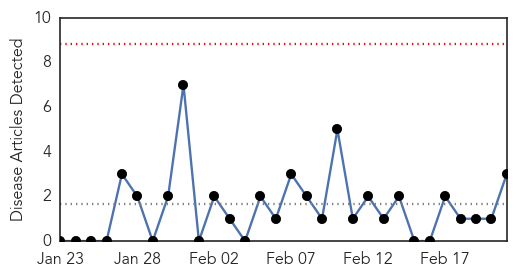
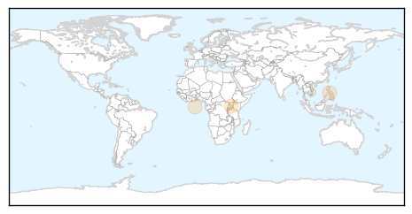
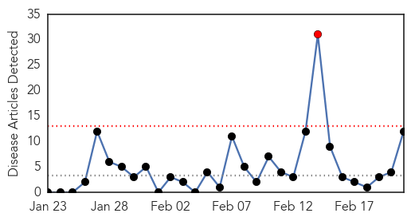

Cholera
30-Day Web Trend
0 alerts, 0 warnings

30-Day Twitter Trend
0 alerts, 0 warnings
Article Locations
Article Confidences

Top Articles:
Top Tweets:
-
No tweets found for Feb 21, 2014
Measles
30-Day Web Trend
1 alerts, 0 warnings

30-Day Twitter Trend
0 alerts, 0 warnings

Article Locations

Article Confidences
Top Articles:
- 0.993
- Health department probes measles case in Pittsburgh
- 0.991
- Why Some Rich, Educated Parents Avoid Vaccinations
- 0.991
- As California's flu season fades, new threat emerges: measles
- 0.990
- Measles on the rise, flu deaths continue in California
- 0.989
- Amid Measles Spike, Health Officials Say 2014 Off to Bad Start
- 0.972
- More measles cases in California — that’s what vaccines are for
- 0.970
- Measles, Flu Spike Concerns State, Local Health Officials
- 0.966
- Measles cases increase in California
- 0.957
- UNICEF organizes measles vaccination campaign in Guinea
- 0.936
- Measles cases surge in California
- 0.936
- Vaccinations urged as measles rise in California
- 0.860
- Vietnam to import nearly 80,000 doses of chickenpox vaccine
Top Tweets:
-
No tweets found for Feb 21, 2014